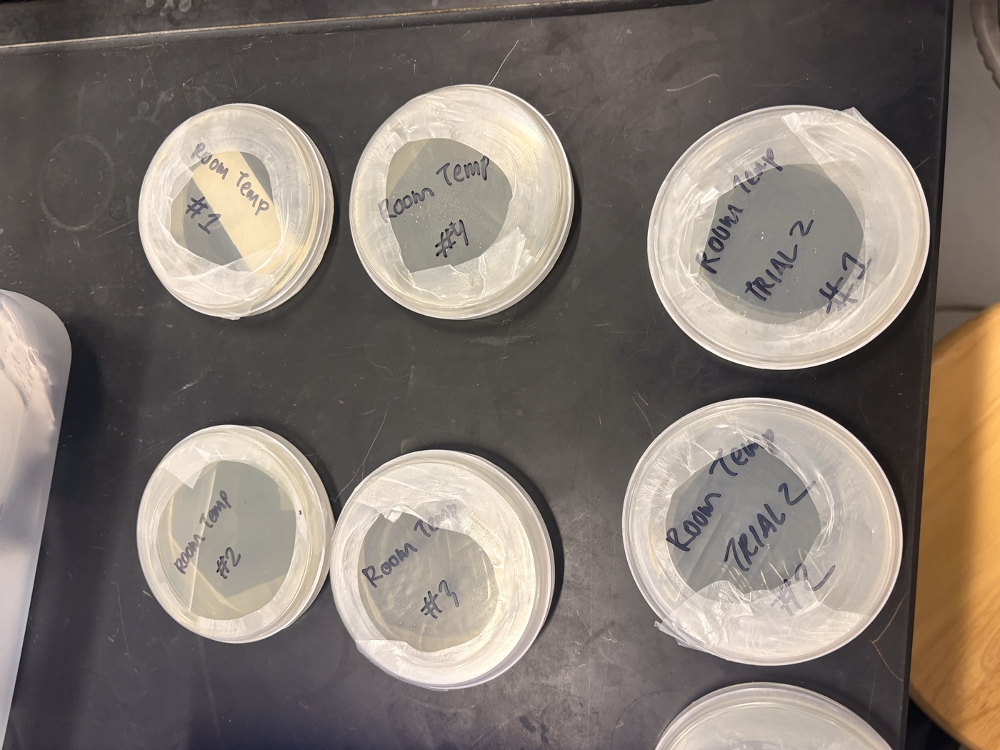
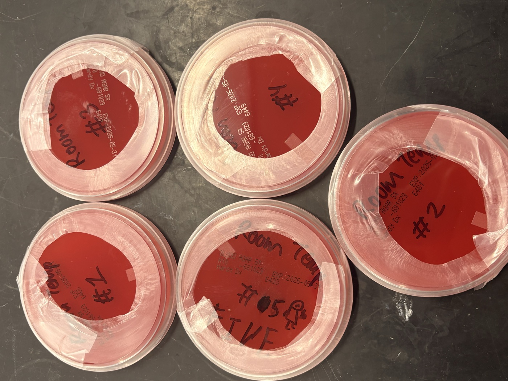
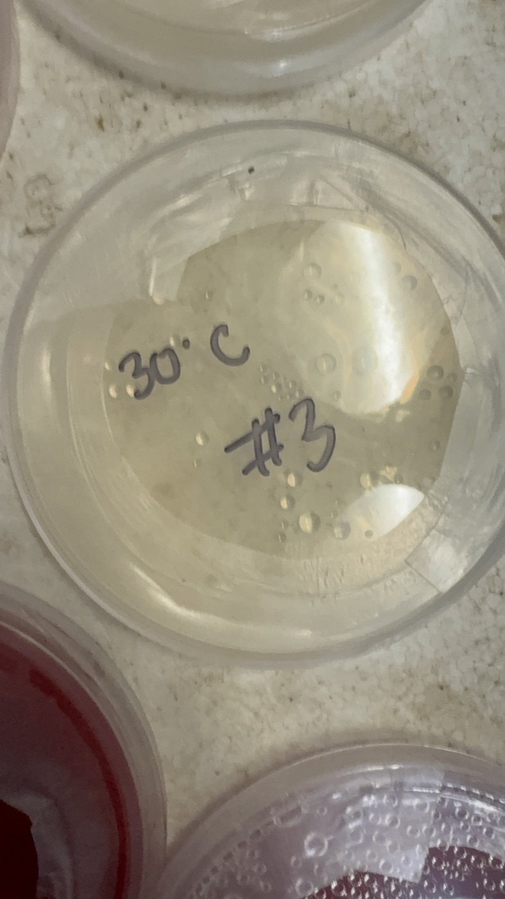
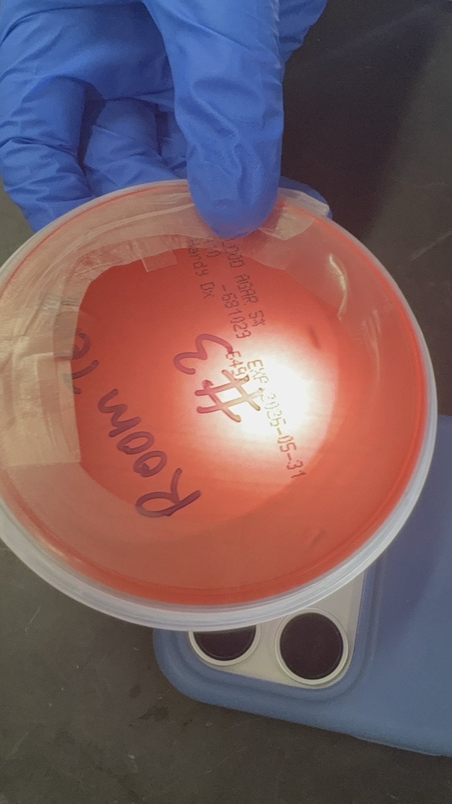

Pond 0
Placeholder—link field photos, maps, and parameter tables when ready.
A MESA research thread at Diablo Valley College: pond conditions, weather, water chemistry, and lab follow-up—documented clearly so we can compare sites and improve methods over time.
This page is a working snapshot: what we are measuring, what heavy rain might do to small ponds, and what we want to test next. Long term, the site can grow into a fuller archive—similar in spirit to how research institutes explain why each system matters (see Stowers Institute — Organisms as an example of that storytelling style).
Lab documentation from plate setups and incubation labels. Image timestamps group on April 2–3, 2026 (local time) for this batch; filenames are the phone originals.




Photos are compressed JPEGs in assets/photos/ for the web; keep full-resolution phone originals outside Git if you archive them.
Click a date to expand. Newest meetings are listed first.
Summaries from team discussions—edit text in index.html under each <details> block.
Discussion covered chlorine, pH (higher on a rainy collection day), copper and lead (0—no need to continue), carbonate (0 all ponds), ammonium nitrogen (0), sodium chloride, nitrate—stop routine testing when consistently zero.
Order (greatest → least): Pond 3 > 0 > 1 > 2. Pond 0 higher than 1 & 2 was surprising vs expectation that the smallest/clearest bowl would be lowest—sampling location may matter.
Calculation: convert filter mass to mg, volume to L → mg/L. Consistency issue: filter paper sometimes weighed more after than before → negative mass—troubleshoot procedure.
Only Pond 2 showed a value; others none detected.
Increase from pond 0 → 3; prior zeros vs new values—possible experimental error last time.
Pond 0 increase from 0 → 10—what could cause it?
Hypothesis: In fall/winter, greater turbidity across all three ponds (rain → runoff). Test: inexpensive turbidity approach; ~bimonthly samples + after rainfall; extend through winter (and hotter months for baseline).
Depth first (may be negligible if shallow)—decide measurement method.
Important: pick an aspect you care about; consider pair work; choose answerable research questions.
Explore assigned water aspect on sheet by next meeting Oct 17, 2025.
Five sites: Pond 0 through Pond 4. Each can eventually get its own page: location, habitat focus, methods, results, and dated notes.
Placeholder—link field photos, maps, and parameter tables when ready.
Placeholder.
Placeholder.
Placeholder.
Placeholder.
People
MESA biology cohort.
Contact — add public email when approved —
Programs and reference reading.